Estudiante / carné: 25004557 | Fecha: 2026-09-14 | App: TodoList (Node.js + Express + React/Vite/TypeScript)
| Entregable | Dónde está |
|---|---|
| Repositorio Git | https://github.com/mmazariegos-2021338/todo-api (rama tarea-6) |
| Dockerfile + README | Raíz del repo. Guía de esta tarea: docs/tarea6.md |
| Docker Hub v1.0 y v2.0 | https://hub.docker.com/r/devmar17/25004557/tags |
| Imagen (nombre = carné) | devmar17/25004557:1.0 y devmar17/25004557:2.0 |
| App local v1 / v2 | http://127.0.0.1:8080 — capturas más abajo |
| Servidor | http://134.209.65.91:25045 — usuario root, contenedor todolist-25004557, puerto 25045 |
| # | Pedido | Estado | Evidencia |
|---|---|---|---|
| 5 | Repo Git con código, Dockerfile y README | Listo en disco | https://github.com/mmazariegos-2021338/todo-api |
| 6 | Docker Hub CARNET:1.0 y :2.0 | Publicado | https://hub.docker.com/r/devmar17/25004557/tags |
| 7 | App v1 local | Listo | Figura 1 |
| 8 | docker images | Listo | Salida real más abajo |
| 9 | Push / repo en Hub | Listo | Figura 3 |
| 10 | Conexión y despliegue en servidor | Hecho | SSH root@134.209.65.91, puerto 25045 |
| 11 | docker ps | Hecho | todolist-25004557 0.0.0.0:25045->8080/tcp |
| 12 | App v1 en servidor | Hecho | Figura 4 — http://134.209.65.91:25045 |
| 13 | App v2 en servidor | Hecho | Figura 5 |
| 14 | Proceso de actualización | Hecho | Recreate 1.0 → 2.0 |
| 15 | Rollback a v1 | Hecho | Recreate 2.0 → 1.0; health 1.0 |
| 16 | Logs del contenedor | Local listo | TodoList v1.0/v2.0 escuchando en el puerto 8080 |
Tecnología: Node.js + Express (API) y React + Vite + TypeScript (interfaz en frontend/). El Dockerfile hace el build de Vite y Express sirve esa carpeta public/.
| Requisito | Cómo se cubre |
|---|---|
| Crear tarea con ID, título, descripción, estado y fecha | POST /tasks → 201. Estado por defecto PENDIENTE. createdAt en ISO. |
| Listar | GET /tasks |
| Actualizar título, descripción y estado | PUT /tasks/:id |
| Eliminar | DELETE /tasks/:id → 204 |
| Estados mínimos | PENDIENTE, EN PROGRESO, COMPLETADA |
| v2.0 (mejora + banner) | Filtro por estado, estadísticas y título visible TodoList v2.0 |
Configuración por variables de entorno: PORT (8080) y APP_VERSION (1.0 / 2.0). No hay contraseñas en el código ni en Git.
npm install npm install --prefix frontend npm test npm run build:ui APP_VERSION=1.0 npm start # http://127.0.0.1:8080 → TodoList v1.0 (React) # desarrollo del front: # APP_VERSION=2.0 npm start # npm run dev:ui → http://127.0.0.1:5173
12 pruebas Jest en verde. El almacenamiento es en memoria (se reinicia al recrear el contenedor).
docker build --build-arg APP_VERSION=1.0 -t devmar17/25004557:1.0 . docker build --build-arg APP_VERSION=2.0 -t devmar17/25004557:2.0 . docker images docker run -d --name todolist-25004557 -p 8080:8080 devmar17/25004557:1.0 docker ps docker logs todolist-25004557
docker images (solo imágenes del carné)REPOSITORY TAG IMAGE ID SIZE devmar17/25004557 2.0 5c885bba6881 248MB devmar17/25004557 1.0 484b926c0710 248MB
docker ps (local)NAMES IMAGE STATUS PORTS todolist-25004557 devmar17/25004557:2.0 Up (healthy) 0.0.0.0:8080->8080/tcp
TodoList v1.0 escuchando en el puerto 8080 TodoList v2.0 escuchando en el puerto 8080
docker login docker push devmar17/25004557:1.0 docker push devmar17/25004557:2.0
Digest 1.0: sha256:484b926c0710…
Digest 2.0: sha256:5c885bba6881…
URL: https://hub.docker.com/r/devmar17/25004557/tags
ssh root@134.209.65.91 docker pull devmar17/25004557:1.0 docker run -d --name todolist-25004557 -p 25045:8080 devmar17/25004557:1.0 docker ps
URL: http://134.209.65.91:25045. Imágenes construidas para linux/amd64 (el servidor no es ARM).
docker pull + docker run. No hay pipeline que despliegue solo.Mejoras funcionales: filtro por estado y estadísticas. El título de la página es TodoList v2.0.
docker build --build-arg APP_VERSION=2.0 -t devmar17/25004557:2.0 . docker push devmar17/25004557:2.0
Se detiene y elimina el contenedor actual y se levanta el nuevo. Es simple y cumple la consigna. El costo es una ventana sin servicio mientras no hay contenedor escuchando.
# Actualizar docker stop todolist-25004557 docker rm todolist-25004557 docker pull devmar17/25004557:2.0 docker run -d --name todolist-25004557 -p 25045:8080 devmar17/25004557:2.0 # Simular problema en v2 y rollback a 1.0 docker stop todolist-25004557 docker rm todolist-25004557 docker run -d --name todolist-25004557 -p 25045:8080 devmar17/25004557:1.0
La imagen 1.0 se deja en Hub para poder volver atrás.
1.0 y 2.0; no se usa solo latest.npm test, docker run) antes de publicar.PORT, APP_VERSION).docker ps y docker logs.docs/tarea6.md.17. ¿Qué es una implementación de software?
Es el proceso de poner una versión del software en un ambiente real (local, pruebas o producción) para que se pueda usar: empaquetar, configurar, desplegar y verificar.
18. ¿Qué diferencia existe entre desarrollo e implementación?
Desarrollo es construir y probar el código. Implementación es instalar o ejecutar esa versión en un ambiente destino (servidor, contenedor, nube) con su configuración y acceso de red.
19. ¿Qué problema resuelve Docker durante una implementación?
Empaqueta la app y sus dependencias en una imagen reproducible. Evita que cambien la versión de Node, las librerías o el sistema entre la laptop y el servidor.
20. ¿Por qué debemos versionar una imagen Docker?
Para saber qué corre en producción, publicar 2.0 sin borrar 1.0 y poder hacer rollback. latest no dice qué funcionalidad está desplegada.
21. ¿Qué diferencia existe entre integración continua y entrega continua?
CI: cada cambio se integra y se prueba solo (build, tests). Entrega continua: lo que pasa CI queda empaquetado y listo para desplegar (imagen versionada), pero el paso a producción puede ser manual.
22. ¿Qué diferencia existe entre entrega continua y despliegue continuo?
Entrega continua deja el artefacto listo; una persona decide cuándo publicarlo. Despliegue continuo lo manda a producción de forma automática si pasa las pruebas.
23. ¿Qué es rollback y por qué es importante?
Volver a una versión anterior que sí funcionaba (aquí, de 2.0 a 1.0). Acorta el tiempo de falla si la nueva versión tiene un problema.
24. ¿Qué ventajas presenta Blue/Green?
Hay dos ambientes (azul = actual, verde = nueva). Se cambia el tráfico cuando verde está sano. El rollback es devolver el tráfico al azul, con poco o nulo downtime.
25. ¿Qué ventajas presenta Canary?
Se expone la nueva versión solo a una fracción de usuarios. Si hay error, el impacto es limitado; se puede ampliar o revertir con evidencia real.
26. ¿Por qué no es recomendable modificar manualmente producción?
No queda un registro reproducible, es fácil romper algo, no se puede repetir el mismo cambio en otro ambiente y el rollback se vuelve adivinanza.
27. ¿Qué información debe verificarse después de un despliegue?
Que el contenedor esté Up (docker ps), que los logs no muestren error (docker logs), que /health responda, que la UI cargue en http://IP:PUERTO y que el CRUD básico funcione.
Figura 1. TodoList v1.0 en local (http://127.0.0.1:8080).
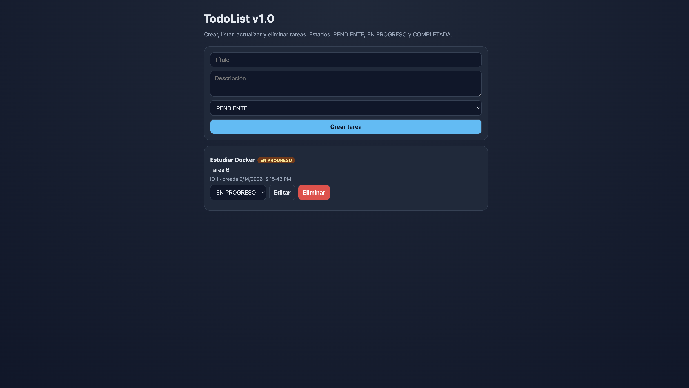
Figura 2. TodoList v2.0 en local: estadísticas, filtro por estado y banner v2.0.
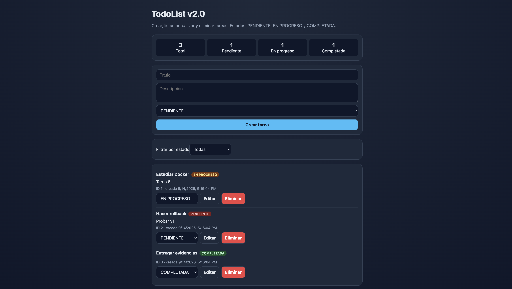
Figura 3. Docker Hub con tags 1.0 y 2.0 del repositorio devmar17/25004557.
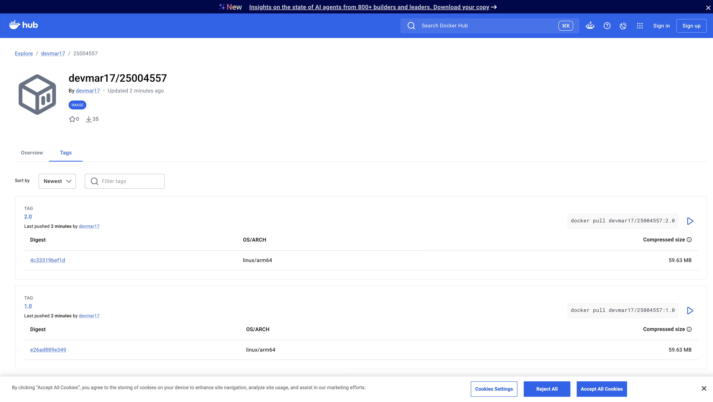
Figura 4. TodoList v1.0 en el servidor (http://134.209.65.91:25045).
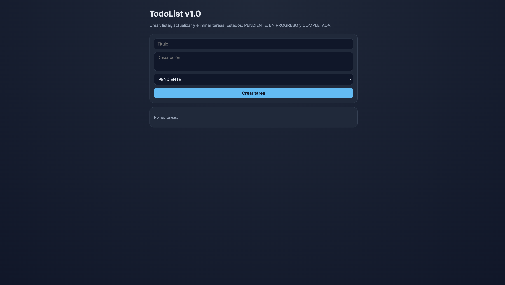
Figura 5. TodoList v2.0 en el servidor: estadísticas y filtro por estado.
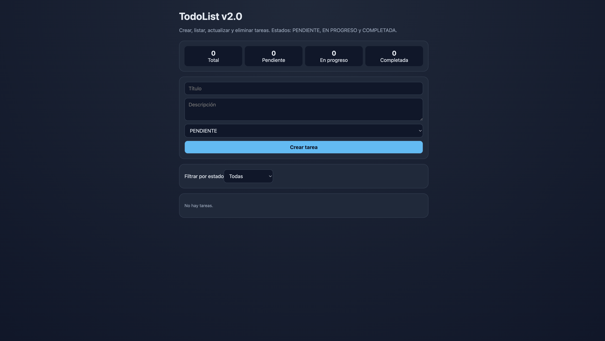
Figura 6. docker images — imágenes devmar17/25004557:1.0 y :2.0.
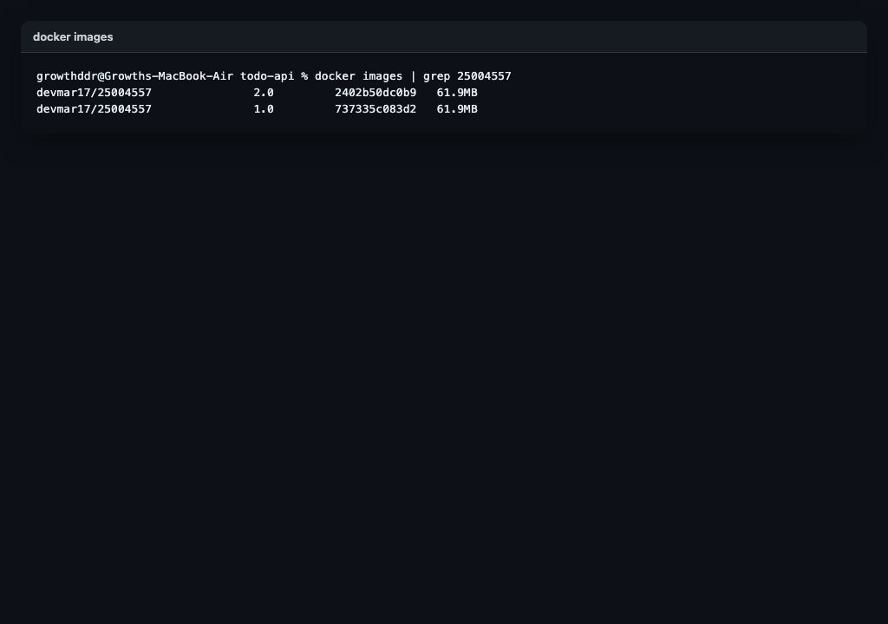
Figura 7. docker push devmar17/25004557:1.0.
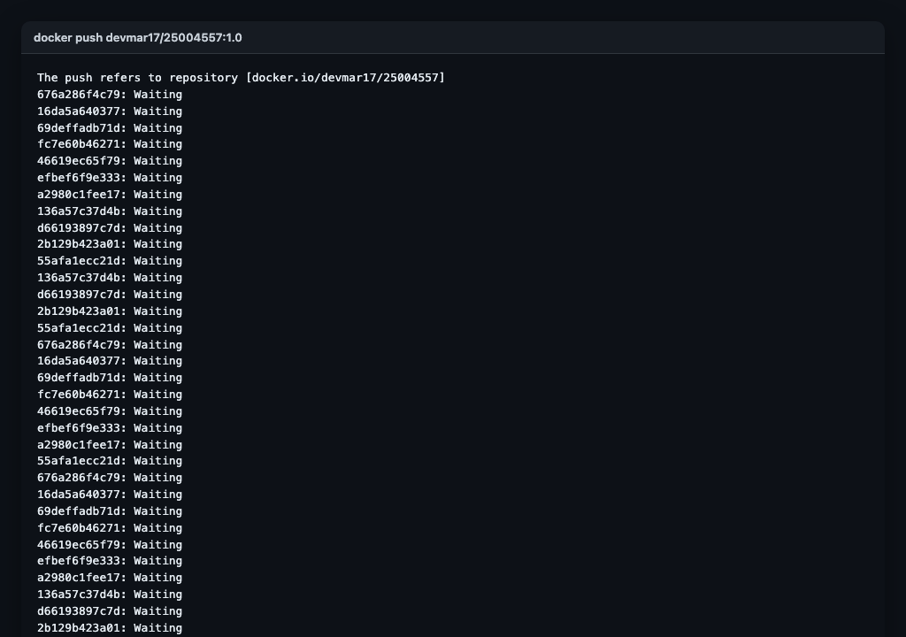
Figura 8. Conexión SSH y despliegue de v1.0 en el servidor (134.209.65.91:25045).
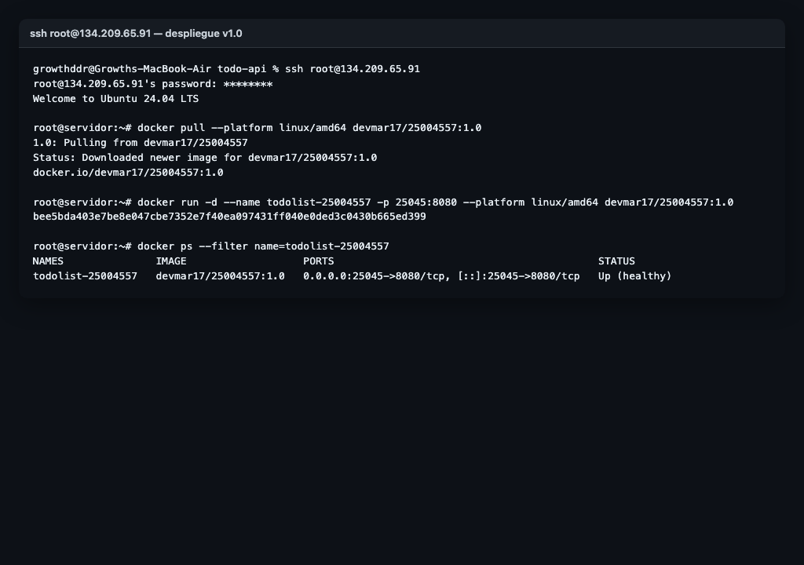
Figura 9. docker ps en el servidor.
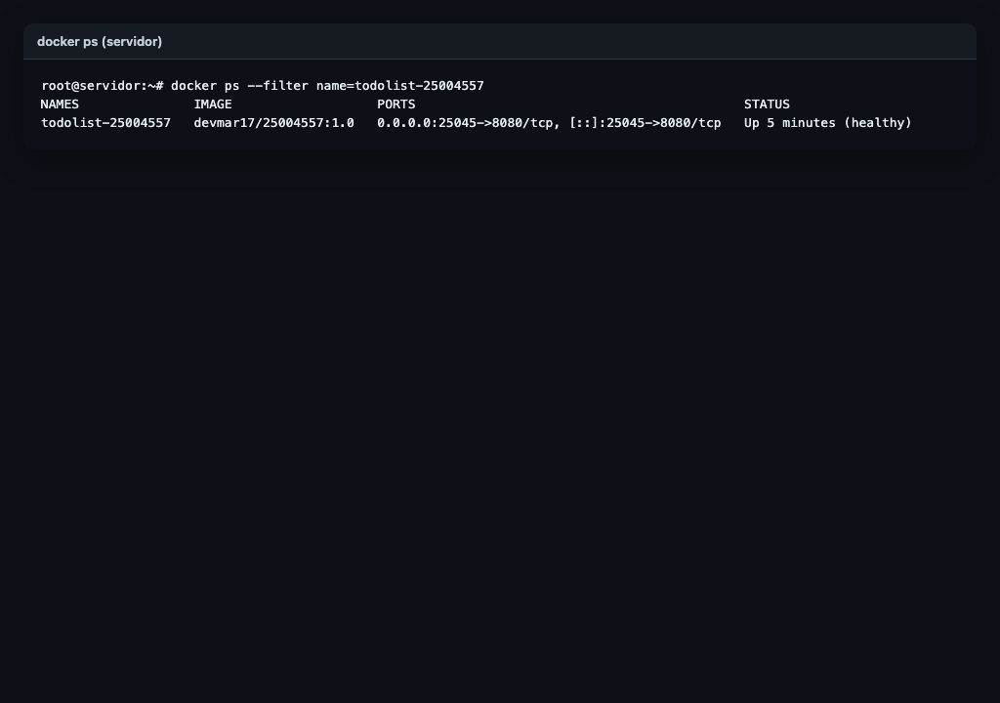
Figura 10. docker logs y health check.
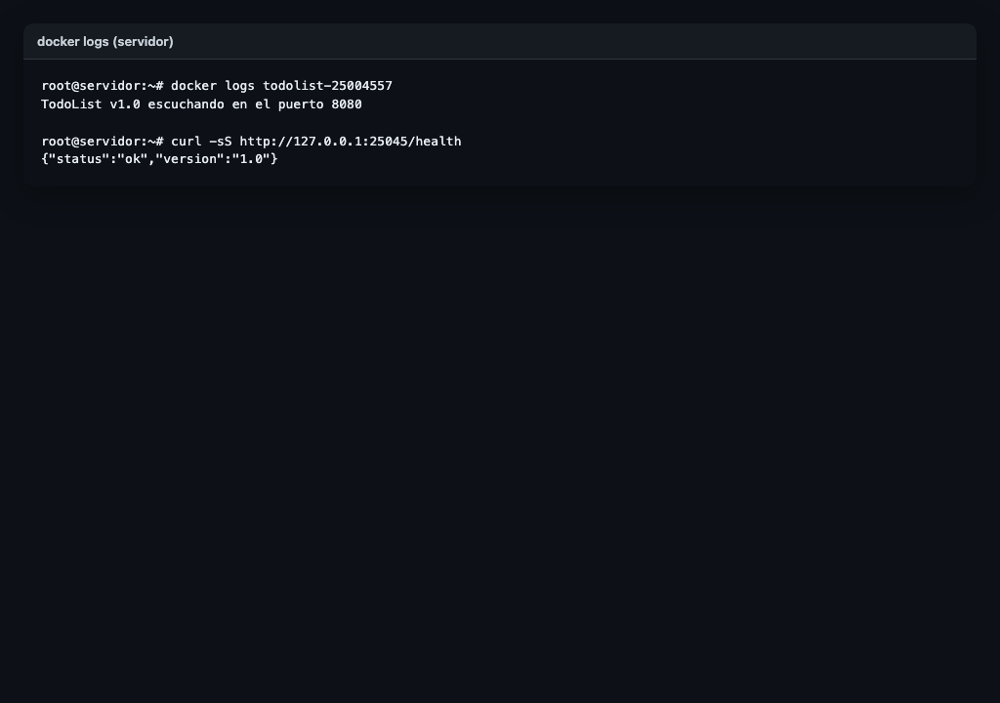
Figura 11. Actualización Recreate de 1.0 → 2.0.
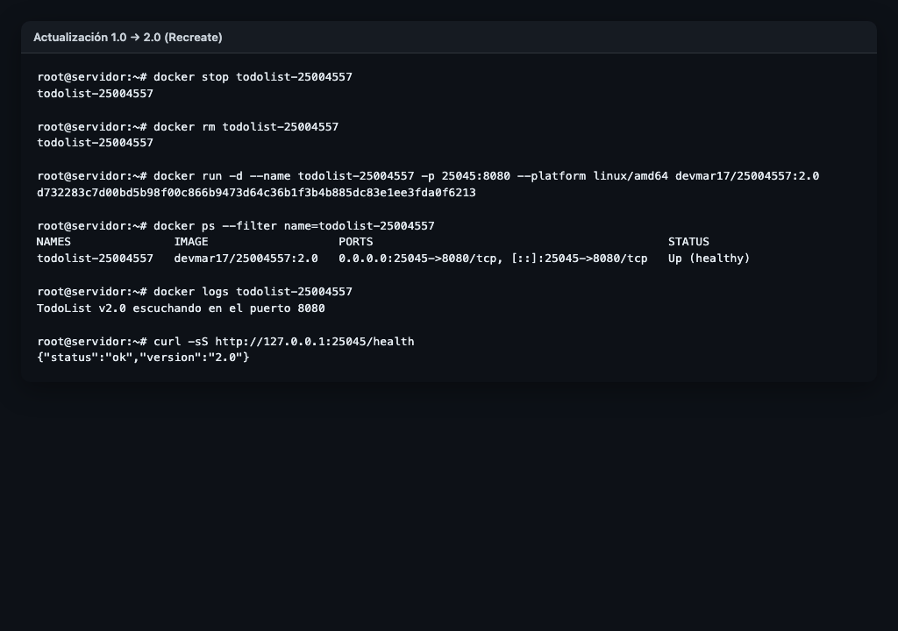
Figura 12. Rollback de 2.0 → 1.0.
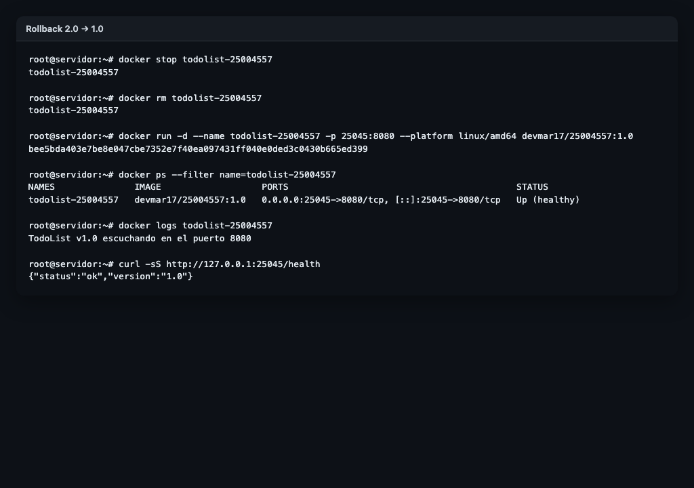
Se usó un asistente para armar el Dockerfile, la UI, el README y estas respuestas. El código se revisó, se probaron 12 tests y se construyeron/publicaron las imágenes a mano. Las credenciales del servidor no se guardaron en Git.
Puerto 25045 elegido porque estaba libre en el servidor compartido. Tras el rollback la URL quedó en v1.0; v2.0 se demostró y quedó capturada.